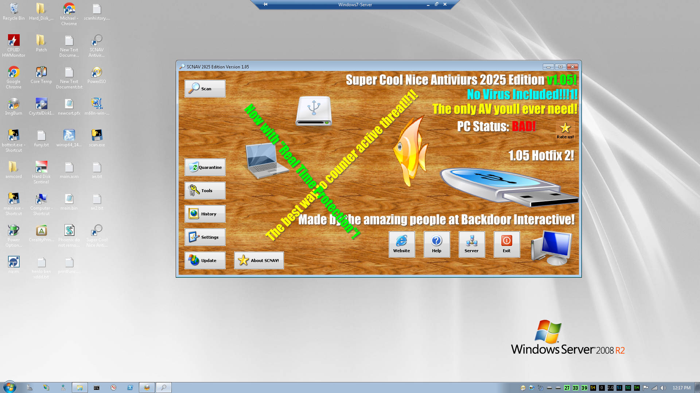

About SCNAV
SCNAV is an antivirus. that antiviruses. Yes. You heard me right! this antivirus is fully under your control! Amazing right? Fully under your control! No automated annoyences like Windows Defender has
SCNAV Runs on Windows Vista and up! (Because we love Windows 7! AND Windows Vista)

Features
- COMPLETE USER CONTROL! : The user (AKA you!) has FULL CONTROL of the AV, It wont do anything on its own!
- (Unless the user enables real time protection in settings, Then autoscanning turns on. but Threat Removeal is still entirely up to the user)
- Compatibility for Windows Vista and up!
- 32bit!
- Moderately good "real time protection"
- Lots of Scan tool(s)
- Antivirus Tool Box!
- SCNAV Virtual Keyboard! (Part of toolbox)
- Quickly and safely remove detected threats in just 2 clicks! (If you ran a scan and detected threats. Extra clicks needed if you just launched SCNAV)
- Simple (But very silly) User interface
- Moderate sized program with a large database of malware hashes!

Installing SCNAV v1.05 on Windows 7 using the autorun executable
Infact this very server is protected by SCNAV!
Minimum System Requirements
Operating System: Windows Vista (i used Service Pack 2)
Ram: 1gb You must enabled Low ram mode. See Settings on SCNAV's main menu!
Low ram mode prevents loading the bases into memory. Saving memory. But puts more strain on the HDD. Scans are slower
CPU: Core Duo T2600 (This is the slowest CPU Ive tested with)
Storage: Decent-Average Speed. at least 2.7gb free space
Maximum (Recomended) System Requirements
Operating System: Windows 7
Ram: 8gb
CPU: Core 2 Extreme QX6850 or better (For High Scanning Performace)
Storage: Fast. at least 2.7gb free space
Documentation
Click here to master SCNAV's Features
Download Links!
Please wait while we move ourwebsite over to github!
Already have SCNAV 1.05 Hot fix 2 and up installed? Simply click UPDATE on the main menu to update to the newest version!
Recent Bug Fixes / New Updates!
Version 1.05! Hot Fix #2 (8/16/25)
The ability to Update SCNAV from the main menu has been added!
Version 1.05! Hot Fix #1 (7/30/25)
WINDOWS VISTA SUPPORT!
Sorry we had to remove the virustotal implementation as it is not compatible with Windows Vista
BIG update! Version 1.05! (7/22/25)
Use the latest version of the ISO To update
REAL TIME PROTECTION! Check out SCNAV's settings and fire it up!
Fixed remove wanting pyglet
New threat detected sound effect! "ae"
New update! Version 1.04!
Use the latest version of the ISO To update
Toolbox works now! Check out SCNAV Virtual Keyboard! XD
Fixed known SCAN.exe bugs: SCAN Crashed if it detected a threat with certain charecters in the file! (* for example)
New threat detected sound effect!
New update! Version 1.03! (6/15/25)
Windows 7 version, Use the .msi or the web based installer. ISO needs to be updated
VirusTotal implementation! Simply press the virustotal button on the scan page! (Dont steal my API key! Unless you want to ruin this nice feature permenatly)
"Send a file for us to scan" feature work in progress
scan settings work in progress
New update! Version 1.02! (4/15/25)
SCNAV IS OUT OF BETA AND FULLY FUNCTIONAL!
Finally a working release!
New Server/Client CLI operation!
Multiple client SCNAVs can connect to a server on your local intranet to scan and remove threats remotely!
Hello! beta update Version 1.01! (4/16/25)
GIANT LOCAL MD5 MALWARE HASH DATABASE! 1.1gb with over 38 million entries! UPDATE NOW!
Recoded and redesigned the whole thing because it accidently deleted the itself. along with the source code
Fixed stuff which caused SCNAV to accidentally delete itself
added a useless Rate us! button